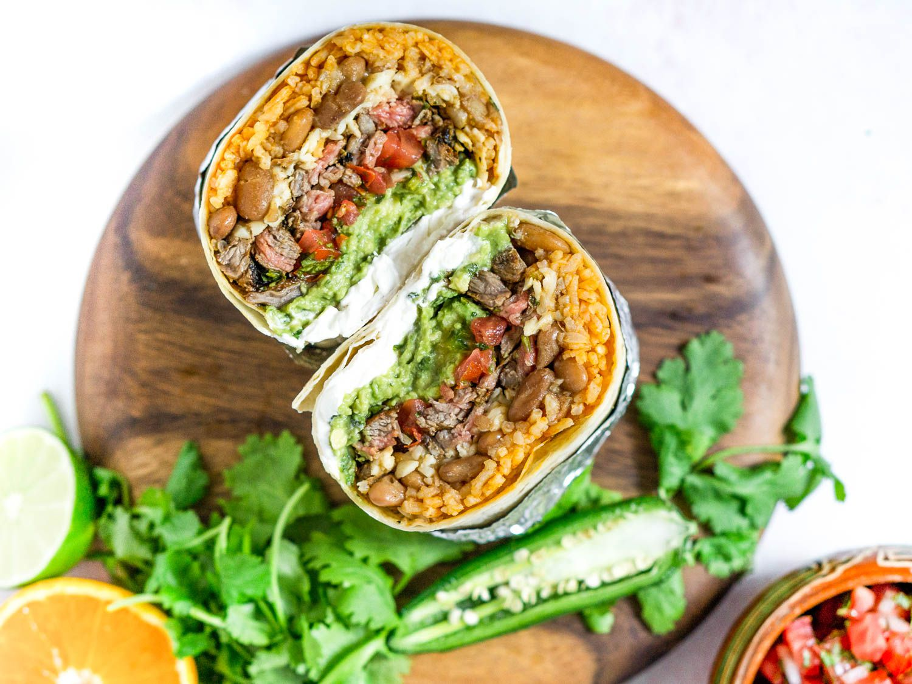

Burrito Recipe

Description
Stuffed to the brim with golden rice, creamy pinto beans, char-grilled marinated skirt steak, and the works, San Francisco's Mission burrito is a Cal-Mex classic. Can you eat a whole one?
The mission burrito is well known for its comical size and heft, stuffed with things like grilled meat, rice, beans, and an array of condiments. Though it comes from San Francisco's Mission District, this taqueria burrito is now consumed all over the Bay Area and beyond via taqueria-inspired chain restaurants like Chipotle.
Ingredients
For the Carne Asada:
- 1/2 cup (120ml) fresh orange juice (from about 3 navel oranges)
- 1/2 loosely packed cup (1.4 ounces; 40g) finely chopped cilantro leaves and tender stems
- 4 medium garlic cloves, minced
- 2 tablespoons (30ml) fresh lime juice (from 1 lime)
- 1 tablespoon (15ml) extra-virgin olive oil
- 2 teaspoons whole cumin seeds, toasted and ground (see note)
- 2 teaspoons dried oregano, preferably Mexican
- 1 1/2 teaspoons chipotle powder (see note)
- 2 teaspoons (6g) Diamond Crystal kosher salt; for table salt use half as much by volume or the same weight
- 1 1/2 pounds (680g) skirt steak, trimmed and cut with the grain into roughly 5-inch lengths
For the Beans
- 3 tablespoons (45ml) extra-virgin olive oil
- 1 medium (6-ounce; 180g) yellow onion, diced
- 3 medium cloves garlic, minced
- 2 teaspoons whole cumin seeds, toasted and ground (see note)
- 2 dried bay leaves
- 2 cups (14 ounces; 400g) dry pinto beans
- 6 cups homemade chicken stock or store-bought, low-sodium broth
- Kosher salt
For the Rice
- 2 tablespoons (30ml) neutral oil, such as sunflower, canola, or vegetable
- 1 1/4 cups (8.8 ounces; 250g) long grain rice, rinsed and drained
- 1 medium (6-ounce; 180g) yellow onion, finely diced
- 3 medium cloves garlic, minced
- 2 tablespoons tomato paste
- 2 1/4 cups (530ml) homemade chicken stock or store-bought, low-sodium broth
- 1 teaspoon (3g) Diamond Crystal kosher salt; for table salt use half as much by volume or the same weight
To Cook Carne Asada and Assemble Burritos
- Neutral oil, such as canola, vegetable, or sunflower, for greasing the skillet
- Six 12- to 13-inch flour tortillas
- 1 pound (455g) shredded Monterey Jack cheese
- 1 recipe guacamole
- 1 recipe pico de gallo, drained of excess liquid
- Sour cream, as needed
Directions
- For the Carne Asada Marinade: In a 1-gallon zipper-lock bag, combine orange juice, cilantro, garlic, lime juice, olive oil, cumin, oregano, chipotle powder, and salt. Seal bag and lightly shake to thoroughly combine ingredients.